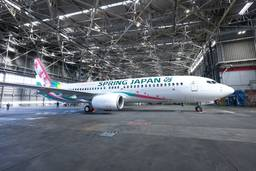
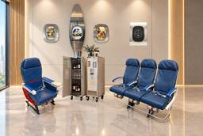
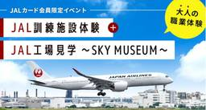
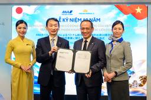
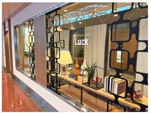
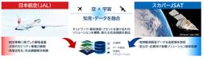

AIRLINE web -月刊エアライン×航空旅行-
https://airline.ikaros.jp
飛行機の運航を支える最前線、魅力あふれる空の旅のサービス、飛ぶためのテクノロジーやエアライン・空港の最新ビジネス動向、飛来機の撮影＆投稿など趣味として楽しむ航空の世界まで幅広く情報をお届けします。
フィード
ANA、「GREEN×EXPO 2027」に協賛。特別デカール機や機内コラボアイテム展開
AIRLINE web -月刊エアライン×航空旅行-
ANA×「GREEN EXPO 2027」 ANAホールディングスは、2027年3月19日より神奈川県横浜市で開催される「GREEN×EXPO 2027」のゴールドパートナーとして「機運醸成プロジェクト」に協賛する。 […]The post ANA、「GREEN×EXPO 2027」に協賛。特別デカール機や機内コラボアイテム展開 first appeared on AIRLINE web -月刊エアライン×航空旅行-.
4時間前
AIRDO、「白い恋人」誕生50周年を記念した機内コラボ企画
AIRLINE web -月刊エアライン×航空旅行-
白い恋人×AIRDO 機内コラボレーション企画。 機内サンプリング。 石屋製菓とAIRDOは、北海道土産の定番「白い恋人」が今年で誕生50周年を迎えることを記念したコラボレーション企画を2026年12月～2027年8月 […]The post AIRDO、「白い恋人」誕生50周年を記念した機内コラボ企画 first appeared on AIRLINE web -月刊エアライン×航空旅行-.
1日前
羽田空港に「くまのプーさん」デビュー100周年を祝う特別なクリスマスツリーが登場！
AIRLINE web -月刊エアライン×航空旅行-
日本空港ビルディングは、羽田空港ではクリスマスシーズンを彩る特別な装飾を施すことを発表した。第1・第2ターミナルで、それぞれ異なるテーマの豪華なクリスマスツリーが登場する。 第1ターミナル2階のマーケットプレイスでは […]The post 羽田空港に「くまのプーさん」デビュー100周年を祝う特別なクリスマスツリーが登場！ first appeared on AIRLINE web -月刊エアライン×航空旅行-.
1日前
ZIPAIR、2027年3月2日より成田＝トロント線就航。本邦エアライン初
AIRLINE web -月刊エアライン×航空旅行-
ZIPAIR、成田＝トロント線就航。 ZIPAIRは、2027年3月2日より成田＝トロント線を就航すると発表した。11月12日より、2027年10月30日搭乗分までの航空券の販売を開始している。トロント線は同社の11路 […]The post ZIPAIR、2027年3月2日より成田＝トロント線就航。本邦エアライン初 first appeared on AIRLINE web -月刊エアライン×航空旅行-.
1日前
週2便の経由便から始まり、毎日2便の直行便へ。JAL、東京＝ニューヨーク線が就航60周年
AIRLINE web -月刊エアライン×航空旅行-
JALの東京＝ニューヨーク線が就航60周年。 JALの東京＝ニューヨーク線が11月12日、定期運航開始から60周年を迎えた。 JALのニューヨーク線は、1964年4月2日にニューヨーク世界博覧会の従業員輸送特別飛行で […]The post 週2便の経由便から始まり、毎日2便の直行便へ。JAL、東京＝ニューヨーク線が就航60周年 first appeared on AIRLINE web -月刊エアライン×航空旅行-.
2日前

スプリング・ジャパン、「桜舞う」新塗装機を成田格納庫でお披露目 11月17日就航へ
AIRLINE web -月刊エアライン×航空旅行-
成田空港のJAL格納庫内で公開されたスプリング・ジャパン新塗装をまとったボーイング737-800（JA05GR）。 中国・広州で塗装変更、11月10日に成田へ帰着 スプリング・ジャパンは11月11日、成田空港で新塗装初 […]The post スプリング・ジャパン、「桜舞う」新塗装機を成田格納庫でお披露目 11月17日就航へ first appeared on AIRLINE web -月刊エアライン×航空旅行-.
3日前
JALUX、JALファーストクラスラウンジの「塩バニラアイス」を一般販売
AIRLINE web -月刊エアライン×航空旅行-
塩バニラアイス（8個入り）、5,940円。 JALUXは11月2日、JALオリジナルグルメブランド「JAL SELECTION」の新商品として、「塩バニラアイス（8個入り）」をJAL公式ショッピングサイト「JALショッ […]The post JALUX、JALファーストクラスラウンジの「塩バニラアイス」を一般販売 first appeared on AIRLINE web -月刊エアライン×航空旅行-.
3日前
ANA X、マイルが貯まる海外通信サービス「ANA グローバル eSIM」スタート
AIRLINE web -月刊エアライン×航空旅行-
ANA グローバル eSIM。 ANA Xは、ビジョンと連携し、11月10日より、マイルが貯まる海外通信サービス「ANA グローバル eSIM」の提供を開始した。 本サービスは、海外旅行や海外出張時に、自身のスマート […]The post ANA X、マイルが貯まる海外通信サービス「ANA グローバル eSIM」スタート first appeared on AIRLINE web -月刊エアライン×航空旅行-.
3日前

Skyart JAPAN、航空グッズやシミュレーター体験を年末年始に特価販売
AIRLINE web -月刊エアライン×航空旅行-
デルタ航空 B767 ファーストクラスシート Skyart JAPANオリジナルモデル。 航空機関連商品の販売を行うSkyart JAPANは、年末年始の特別企画として「なんでもセール」をテーマに、航空関連商品の幅広い […]The post Skyart JAPAN、航空グッズやシミュレーター体験を年末年始に特価販売 first appeared on AIRLINE web -月刊エアライン×航空旅行-.
4日前

JALカード、会員限定の訓練施設体験＆格納庫見学イベント
AIRLINE web -月刊エアライン×航空旅行-
JALカード会員限定イベント JAL訓練施設体験＋JAL工場見学～SKY MUSEUM～ JALは12月12日、日本航空第一テクニカルセンターで、18歳以上のJALカード会員を対象とした体験イベントを実施する。イベント […]The post JALカード、会員限定の訓練施設体験＆格納庫見学イベント first appeared on AIRLINE web -月刊エアライン×航空旅行-.
4日前

ANAとベトナム航空、提携10周年で共同事業に向けた基本合意書を締結
AIRLINE web -月刊エアライン×航空旅行-
ANAホールディングス（ANAHD）とベトナム航空は11月9日、戦略的業務・資本提携10周年および共同事業（ジョイントベンチャー：JV）開始に向けた基本合意書の締結式典を開催した。ベトナム共産党中央執行委員会書記長兼国 […]The post ANAとベトナム航空、提携10周年で共同事業に向けた基本合意書を締結 first appeared on AIRLINE web -月刊エアライン×航空旅行-.
5日前

羽田空港 第2ターミナルに「ボディケア＆ヘッドスパLUCK WELLNESS」
AIRLINE web -月刊エアライン×航空旅行-
ボディケア＆ヘッドスパLUCK WELLNESS羽田空港第2ターミナル店 日本空港ビルデングは11月2日、羽田空港第2ターミナル3階に「ボディケア＆ヘッドスパLUCK WELLNESS羽田空港第2ターミナル店」をオープ […]The post 羽田空港 第2ターミナルに「ボディケア＆ヘッドスパLUCK WELLNESS」 first appeared on AIRLINE web -月刊エアライン×航空旅行-.
5日前
デルタ航空、羽田=ロサンゼルス線で「デルタ・ワン」のサービスを刷新 1
1
AIRLINE web -月刊エアライン×航空旅行-
デルタ航空は、最上位クラス「デルタ・ワン」のサービスを全面的リニューアルし、2026年11月3日からロサンゼルス国際空港（LAX）発の太平洋横断路線で先行導入すると発表した。新サービスは羽田＝ロサンゼルス線でも展開され […]The post デルタ航空、羽田=ロサンゼルス線で「デルタ・ワン」のサービスを刷新 first appeared on AIRLINE web -月刊エアライン×航空旅行-.
5日前

JALとスカパーJSATが業務提携、衛星データでヒグマの出没リスクを可視化へ
AIRLINE web -月刊エアライン×航空旅行-
JALとスカパーJSATは、衛星データを活用した地域課題の解決と新規事業の創出に向け、業務提携基本契約を締結した。両社の技術や知見を組み合わせ、ヒグマなどの野生鳥獣の出没リスクを可視化するソリューションの開発を検討する […]The post JALとスカパーJSATが業務提携、衛星データでヒグマの出没リスクを可視化へ first appeared on AIRLINE web -月刊エアライン×航空旅行-.
5日前

圏央道 大栄JCT～多古IC開通。熊谷知事「成田空港周辺に産業の立地を」
AIRLINE web -月刊エアライン×航空旅行-
圏央道の大栄JCT～多古IC間が開通。 国土交通省 関東地方整備局とNEXCO東日本（東日本高速道路）は11月7日15時、首都圏中央連絡自動車道（圏央道）の大栄JCT（千葉県成田市吉岡）から多古IC（千葉県香取郡多古町 […]The post 圏央道 大栄JCT～多古IC開通。熊谷知事「成田空港周辺に産業の立地を」 first appeared on AIRLINE web -月刊エアライン×航空旅行-.
7日前

JAL、737-800「トゥンクトゥンクJET」就航！ コシノジュンコが格納庫でファッションショーを演出
AIRLINE web -月刊エアライン×航空旅行-
GREEN×EXPO 2027のロゴ、公式マスコットキャラクター「トゥンクトゥンク」などが描かれたJA344J。 JALは11月6日、羽田空港の格納庫で特別デザイン機「JAL トゥンクトゥンクJET」を公開した。翌7日 […]The post JAL、737-800「トゥンクトゥンクJET」就航！ コシノジュンコが格納庫でファッションショーを演出 first appeared on AIRLINE web -月刊エアライン×航空旅行-.
7日前

羽田空港第1ターミナルで「くまのプーさんデザインパッケージスイーツ」を期間限定販売
AIRLINE web -月刊エアライン×航空旅行-
羽田空港第1ターミナルに、「くまのプーさん」のポップアップが登場。 日本空港ビルデングは、11月1日より羽田空港第1ターミナル2F出発ロビー保安検査C前にて、「POP UP MON・CREVE」の「くまのプーさんデザイ […]The post 羽田空港第1ターミナルで「くまのプーさんデザインパッケージスイーツ」を期間限定販売 first appeared on AIRLINE web -月刊エアライン×航空旅行-.
8日前
アラスカ航空、成田＝アンカレッジ線に直行便。2027年5月から毎日運航
AIRLINE web -月刊エアライン×航空旅行-
アラスカ航空は、2027年5月13日からアンカレッジのテッド・スティーブンス・アンカレッジ国際空港と成田国際空港を結ぶ初の直行便を就航すると発表した。アンカレッジ発は9月7日まで、成田発は5月14日から9月8日まで毎日 […]The post アラスカ航空、成田＝アンカレッジ線に直行便。2027年5月から毎日運航 first appeared on AIRLINE web -月刊エアライン×航空旅行-.
8日前
HondaJetで成田空港発着の「2027年 プライベートジェット初日の出フライト」
AIRLINE web -月刊エアライン×航空旅行-
「2027年 プライベートジェット初日の出フライト」。 成田国際空港（NAA）グループのグリーンポート・エージェンシーは、FPGAir（エフピージーエア）の協力のもと、成田空港発着の「2027年 プライベートジェット初 […]The post HondaJetで成田空港発着の「2027年 プライベートジェット初日の出フライト」 first appeared on AIRLINE web -月刊エアライン×航空旅行-.
8日前
神戸空港、11月29日に「空の日イベント2026」開催、そらやんと撮れるプリクラ初登場
AIRLINE web -月刊エアライン×航空旅行-
関西エアポート神戸は、11月29日に神戸空港で「空の日イベント2026」を開催すると発表した。航空や空港への理解と関心を深めることを目的に、航空会社によるブース出展やグッズ販売、お仕事体験、ワークショップなど、さまざま […]The post 神戸空港、11月29日に「空の日イベント2026」開催、そらやんと撮れるプリクラ初登場 first appeared on AIRLINE web -月刊エアライン×航空旅行-.
8日前
ジェットスター・ジャパン、A321LR新造機「JA29LR」を公開、11月6日就航へ
AIRLINE web -月刊エアライン×航空旅行-
ジェットスター・ジャパンが真っ白なエアバスA321LR新造機の機内外を公開。 10月29日に日本に到着した、ジェットスター・ジャパンのエアバスA321LRの4号機（登録記号：JA29LR）が11月6日に就航する。それに […]The post ジェットスター・ジャパン、A321LR新造機「JA29LR」を公開、11月6日就航へ first appeared on AIRLINE web -月刊エアライン×航空旅行-.
9日前
セントレア、フライトパークに乳幼児専用あそび場「ヒコーキの丘」がオープン
AIRLINE web -月刊エアライン×航空旅行-
新たな乳幼児専用あそび場「ヒコーキの丘」 中部国際空港セントレアでは、11月1日、遊んで＆学べる空のテーマパーク「フライト・オブ・ドリームズ」1階の「フライトパーク」において、乳幼児専用遊び場「ヒコーキの丘」がオープン […]The post セントレア、フライトパークに乳幼児専用あそび場「ヒコーキの丘」がオープン first appeared on AIRLINE web -月刊エアライン×航空旅行-.
10日前
成田国際空港フォトコンテスト2026、受賞作品が決定。応募1,061作品から17作品受賞
AIRLINE web -月刊エアライン×航空旅行-
「成田国際空港フォトコンテスト2026～Share your NARITA Airport～」 成田国際空港（NAA）は、東京カメラ部と連携し、「成田国際空港フォトコンテスト2026～Share your NARITA […]The post 成田国際空港フォトコンテスト2026、受賞作品が決定。応募1,061作品から17作品受賞 first appeared on AIRLINE web -月刊エアライン×航空旅行-.
10日前
JALと豊田自動織機、羽田空港で自動運転レベル4の走行ルート拡大へ
AIRLINE web -月刊エアライン×航空旅行-
JALと豊田自動織機は、羽田空港で自動運転レベル4に対応したトーイングトラクターの走行ルート拡大に向けた検証を開始する。自動運転レベル4は、特定の条件下でシステムがすべての運転操作を担う完全無人運転を指す。 JALは […]The post JALと豊田自動織機、羽田空港で自動運転レベル4の走行ルート拡大へ first appeared on AIRLINE web -月刊エアライン×航空旅行-.
10日前
JALとJ-AIR、2026年度冬の自社養成パイロット業務体験を合同開催
AIRLINE web -月刊エアライン×航空旅行-
JALとJ-AIRは、2027年1月6日から8日まで、「2026年度自社養成パイロット業務体験（冬）」を合同で開催する。対面またはオンライン形式で実施し、10月30日から11月29日まで応募を受け付ける。 今回の業務 […]The post JALとJ-AIR、2026年度冬の自社養成パイロット業務体験を合同開催 first appeared on AIRLINE web -月刊エアライン×航空旅行-.
10日前
ANA国際線就航40周年記念、AVIREXとのコラボ商品発売。MA-1ブルゾンとヘルメットバッグが登場
AIRLINE web -月刊エアライン×航空旅行-
MA-1ブルゾンとヘルメットバッグ 全日空商事は、ANA国際線就航40周年を記念し、米国のミリタリーウェアブランド「AVIREX（アヴィレックス）」とコラボレーションしたMA-1ブルゾンとヘルメットバッグを数量限定で発 […]The post ANA国際線就航40周年記念、AVIREXとのコラボ商品発売。MA-1ブルゾンとヘルメットバッグが登場 first appeared on AIRLINE web -月刊エアライン×航空旅行-.
10日前
成田・さくらの山「フライトショップ・チャーリイズ」がオープン10周年。飛行機を「見る・聞く・味わう」企画でお祝い
AIRLINE web -月刊エアライン×航空旅行-
成田・さくらの山の「フライトショップ・チャーリイズ」がオープン10周年。 成田空港RWY16Rエンドのさくらの山公園にある「空の駅 さくら館」で11月3日、「フライトショップ・チャーリイズ」のオープン10周年を記念する […]The post 成田・さくらの山「フライトショップ・チャーリイズ」がオープン10周年。飛行機を「見る・聞く・味わう」企画でお祝い first appeared on AIRLINE web -月刊エアライン×航空旅行-.
10日前
JAL「GREEN×EXPO」特別デザイン機のデカール貼付。“貼るだけ”ではない技術が詰まる
AIRLINE web -月刊エアライン×航空旅行-
JAL「GREEN×EXPO 2027」の特別デザイン機のデカール貼付作業がスタート。 JALが協賛する「GREEN×EXPO 2027」の特別デザイン機。10月19日に行なわれたデカールの領収検査の様子はすでにお伝え […]The post JAL「GREEN×EXPO」特別デザイン機のデカール貼付。“貼るだけ”ではない技術が詰まる first appeared on AIRLINE web -月刊エアライン×航空旅行-.
10日前
シンガポール航空、新機内エンタメ「クリスワールド」とスターリンク高速Wi-Fiを導入
AIRLINE web -月刊エアライン×航空旅行-
シンガポール航空は10月23日、次世代機内エンターテインメントシステム「クリスワールド」およびスターリンクの低軌道（LEO）衛星通信を活用した高速接続サービスを導入すると発表した。 2027年以降に運航を開始する改修 […]The post シンガポール航空、新機内エンタメ「クリスワールド」とスターリンク高速Wi-Fiを導入 first appeared on AIRLINE web -月刊エアライン×航空旅行-.
12日前
ZIPAIR、成田空港で恒例のHalloweenイベント。カウンターも機内もハロウィン仕様に
AIRLINE web -月刊エアライン×航空旅行-
ZIPAIRが恒例のハロウィンイベントを開催。 ZIPAIRは10月31日、成田空港 第1ターミナルの同社出発便の搭乗口で、ハロウィンイベントを開催した。 ZIPAIRでは、客室乗務と地上旅客業務を兼務する「Z_ON […]The post ZIPAIR、成田空港で恒例のHalloweenイベント。カウンターも機内もハロウィン仕様に first appeared on AIRLINE web -月刊エアライン×航空旅行-.
14日前
JAL、福岡空港でトーイングトラクターの「自動運転レベル4」運用を開始
AIRLINE web -月刊エアライン×航空旅行-
JALと福岡国際空港（FIAC）は、10月26日から福岡空港において、搬送用車両（トーイングトラクター）の自動運転レベル4（特定条件下での完全無人運転）による運用を開始した。JALにおけるレベル4導入は羽田・成田空港に […]The post JAL、福岡空港でトーイングトラクターの「自動運転レベル4」運用を開始 first appeared on AIRLINE web -月刊エアライン×航空旅行-.
14日前
エア タヒチ ヌイ、成田＝タヒチ線の通年運航を再開
AIRLINE web -月刊エアライン×航空旅行-
エア タヒチ ヌイは、2027年より成田＝タヒチ（パペーテ）線の通年運航を再開する。これにより、年間を通じて日本とタヒチを結ぶ直行便を利用できるようになる。 通年運航の再開には、アジア各国からタヒチへの渡航需要に加え […]The post エア タヒチ ヌイ、成田＝タヒチ線の通年運航を再開 first appeared on AIRLINE web -月刊エアライン×航空旅行-.
15日前